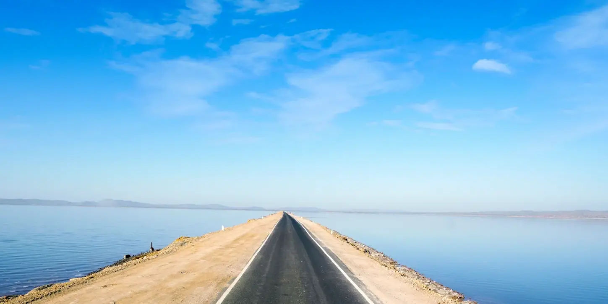

Nature & Mystery
Kadia Dhrow
The "Grand Canyon of India" – a labyrinth of colorful rock formations carved by time itself.
Explore More

Where Silence Speaks in Salt & Stone
"Beyond the endless White Rann lies a land of hidden caves, pristine seashores, and sacred hills. Discover the untold stories of Kutch."
Kutch is far more than just the salt desert. It is a sacred destination for pilgrimage, a playground for
adventure, and a sanctuary of pristine secluded beaches and wild jungles.
Immerse yourself in the living heritage of ancient crafts, where vibrant textiles and intricate arts
tell stories of a timeless culture.
Follow us on this website to find everything you need to explore this land of infinite
diversity.
Secluded Beaches
Kalo Dungar
Ancient Caves
Sacred Sites
From the white salt flats to ancient port towns, these are the soul-stirring landscapes of Kutch.
The "Grand Canyon of India" – a labyrinth of colorful rock formations carved by time itself.

An endless salt desert that glows with an ethereal light under the full moon.

The cultural heart of Kutch, where historic palaces and ancient crafts tell stories of resilience.

A mesmerizing stretch of infinity cutting through the white salt desert into the horizon.

A 5,000-year-old Harappan metropolis standing as a testament to ancient human ingenuity.

Serene shores meeting the majestic Vijay Vilas Palace on the edge of the Arabian Sea.
Book hotels, flights, and experiences with our trusted travel partners. Best prices guaranteed.
Start Booking NowImmerse yourself in the vibrant world of Kutchi traditions, where every thread tells a story and every craft carries centuries of heritage.
Choose your perfect season
Pleasant weather (10-25°C), Rann Utsav festival, perfect for desert camping and full moon visits.
Mild temperatures, fewer crowds, great for photography and deep village explorations.
Extremely hot (40-48°C), monsoon rains, many desert facilities are closed.
All routes lead to Kutch
Bhuj Airport (BHJ) - Daily flights from Mumbai.
Express trains to Bhuj from Delhi, Mum & Ahm.
Scenic NH8A from Ahmedabad (330 km).
Make the most of your Kutch adventure
Layers for temperature changes, sun protection, and comfortable shoes
Carry water when exploring the desert and salt flats
Dress modestly and seek permission for photography
Join our community of Kutch explorers! Get real-time updates on Rann Utsav, weather alerts, and hidden gem locations directly on WhatsApp.